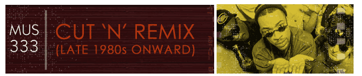

Digable Planets moved further than The Pharcyde in integrating jazz into a hip-hop mix. Their first album, Reachin' (A New Refutation of Time and Space) (1993), was peppered with jazz samples from the likes of Art Blakey and Sonny Rollins, in addition to soul composer and performer Curtis Mayfield. This was followed by Blowout Comb (1994) that featured more solo work and less sampling. The group soon broke up after the release of Blowout Comb.
The single, "rebirth of slick (cool like dat)" from Reachin' (1993), went into the top ten on the r&b charts. It uses samples from bebop great Art Blakey & Jazz Messengers' recording of "Stretchin'" from their Reflections in Blue album and another version of the same tune by James Williams.
"rebirth of slick (cool like dat)" is built up of four or eight bar sections that are articulated by a changing Chorus (heard three times) and four DJ sections alternating male and female DJs in voice overs (and combined together in one of the sections).
Follow the chart below and listen to Digable Planets' "rebirth of slick (cool like dat)" (1993).
0:00-0:19 4+4 mm walking bass sample from Art Blakey & Jazz Messengers' "Stretchin'"
0:19-0:29 4 groove kicks in
0:29-0:39 4 add Blakey horn sample
0:39-1:28 8+8+4 male DJ voice over walking bass sample
1:28-1:37 4 chorus: 'I'm cool like dat'
1:37-2:17 8+8 female DJ voice over walking bass sample
2:17-2:26 4 chorus: 'I'm chill like dat'
2:26-2:46 4+4 walking bass sample, groove, with breaks
2:46-3:15 4+4+4 male DJ voice over, groove, with breaks
3:15-3:25 4 chorus: 'I'm peace like dat'
3:25-3:44 2+2+4 male and female DJs alternate voice overs
3:44-3:54 4 Blakey horn sample
3:54-4:04 4 groove kicks in
4:04-end 4+fade walking bass Outro